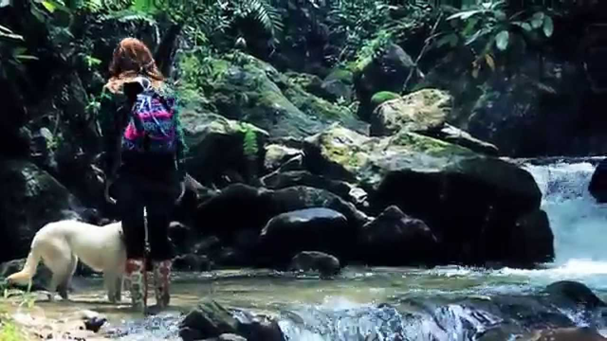
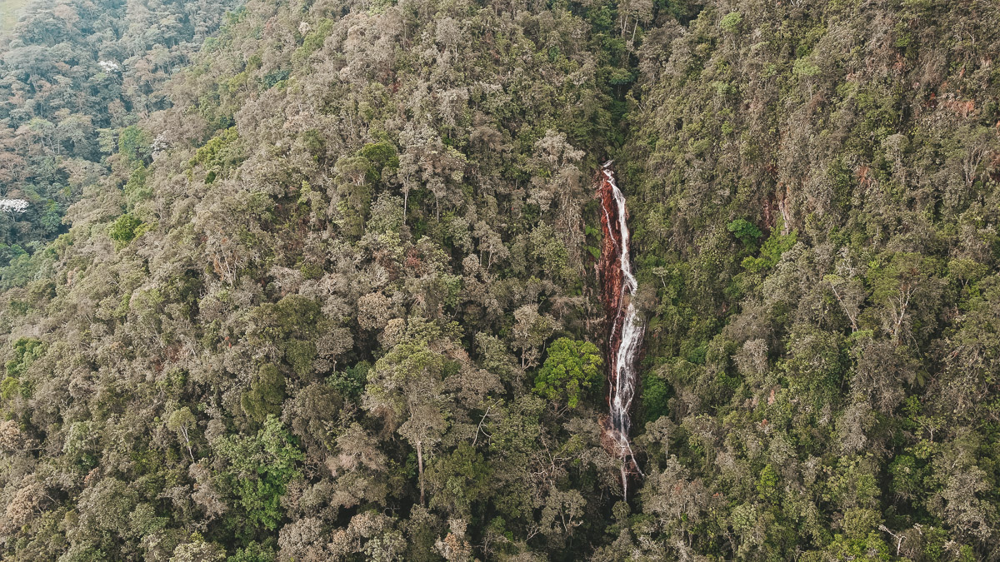
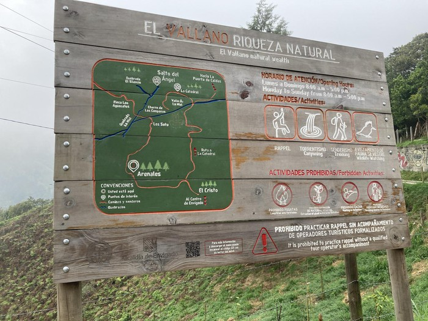
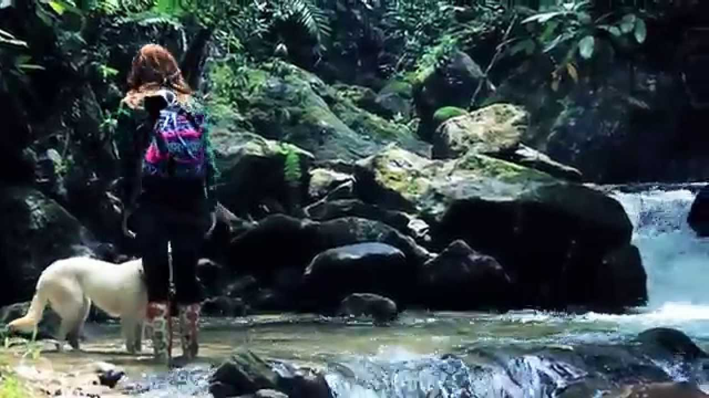
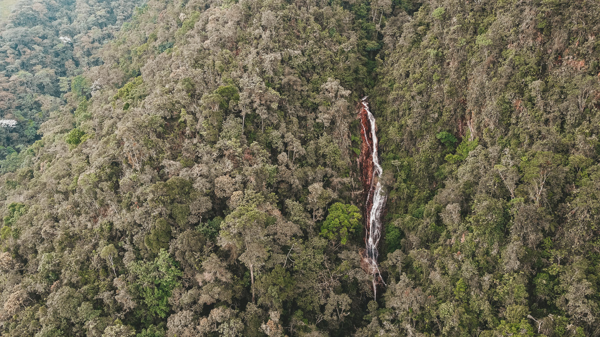
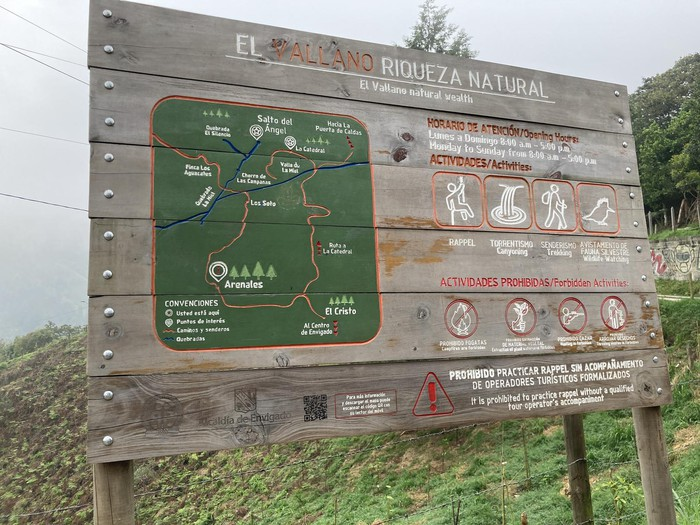

Salto del angel
El sendero es muy agradable, con ecosistemas cambiantes y con ascensos por tierra o río. Diversidad de aves y
paisajes hermosos.
Se llega a la estación Envigado y se toma un bus hasta la vereda Arenales. Al llegar allí está el mapa de la
reserva y decides si ir hasta chorro campanas y luego subir hasta el salto del Ángel o llegar por la
catedral. Nosotros fuimos hasta chorro campanas, el ascenso lo hicimos muchas partes por río, la caminata es
exigente pero no se siente mucho por el bosque tan fresco. Toda la ruta está marcada por flechas y avisos
que indican la distancia.
 





¿Cómo ir a la cascada Salto del Ángel?
Está vereda se encuentra a unos 5 kilómetros del casco urbano del municipio de Jardín, así que para llegar al Salto del Ángel, debes tomar un carro hasta un lugar que se llama el Alto del Cuchillón y desde allí caminar aproximadamente unos 60 minutos hasta encontrarte con la cascada.
DESCRIPCIÓN
Recorre caminos ancestrales, zonas protegidas y el cauce de la quebrada la miel para descubrir una caída de agua escondida entre árboles un lugar mágico que te hará desconectarte del mundo y conectarte con la naturaleza, Chorro de las Campanas una caida de agua de 50m de altura aproximadamente allí te llenas de vida con la variedad de flora y fauna que rodea este lugar
Magestuosa
El sonido del agua nos indicaba que estabamos cerca, poco a poco entre la espesa vegetacion se fue destacando su magestuosidad. Este fue uno de los pasos durante nuestro recorrido hasta la cueva de los guácharos.